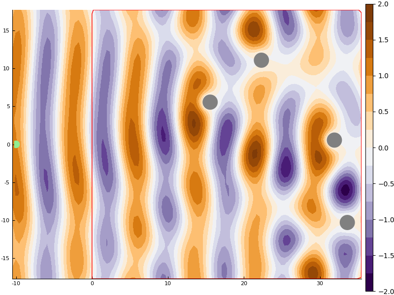

Simple random particles example
## Define particle properties
Define the volume fraction of particles, the region to place the particles, and their radiusjulia using MultipleScattering num_particles = 4 radius = 1.0
particlemedium = Acoustic(2; ρ=0.2, c=0.1) # 2D particle with density ρ = 0.2 and soundspeed c = 0.1 particleshape = Circle(radius)
maxwidth = 20*radius bottomleft = [0.,-maxwidth] topright = [maxwidth,maxwidth] region_shape = Box([bottomleft,topright])
particles = randomparticles(particlemedium, particleshape; regionshape = regionshape, numparticles = num_particles)
Now choose the receiver position `x`, the host medium, set plane wave as a source wave, and choose the angular frequency range `ωs`julia x = [-10.,0.] hostmedium = Acoustic(2; ρ=1.0, c=1.0) source = planesource(host_medium; position = x, direction = [1.0,0.])
ωs = LinRange(0.01,1.0,100)
simulation = FrequencySimulation(particles, source) result = run(simulation, x, ωs)
We use the `Plots` package to plot both the response at the listener position x
julia using Plots; #pyplot(linewidth = 2.0) plot(result, fieldapply=real) # plot result plot!(result, fieldapply=imag) #savefig("plot_result.png")

And plot the whole field inside the region_shape `bounds` for a specific wavenumber (`ω=0.8`)julia bottomleft = [-15.,-maxwidth] topright = [maxwidth,max_width] bounds = Box([bottomleft,topright])
#plot(simulation,0.8; res=80, bounds=bounds)
#plot!(region_shape, linecolor=:red)
#plot!(simulation)
#scatter!([x[1]],[x[2]], lab="receiver")
#savefig("plot_field.png")```

Things to try
- Try changing the volume fraction, particle radius and ω values we evaluate